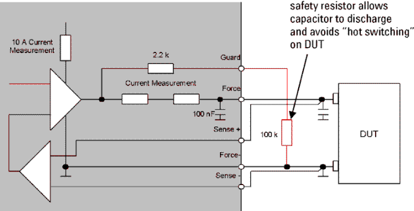

General Purpose DPS (GP-DPS)
A General Purpose DPS contains four General Purpose DPS channels which share a common ground. Each channel has a Force+, Sense+, Force-, Sense-, and Guard line.
| Supported V93000 systems : Smart Scale (SmarTest 7), Pin Scale |
General rules
Position all force and sense connections as close as possible to the DUT. This will help prevent the potential voltage difference across the trace between the DUT pin and the sense point from affecting your measurement.
For very high precision measurements of small currents, surround as much as possible of the Force+ and Sense+ lines of a DPS channel with the guard line. This will enable you to achieve highly accurate current forcing and measurement and minimum current leakage.
To best adapt DPS channels to the appropriate test requirements, you can select from four different performance ranges. Range 1 can drive current swings up to 3 A; ranges 2, 3, and 4 can drive current swings up to 8 A. Depending on your application needs (current swing of DUT, voltage supply stability needs), you can determine an appropriate combination of performance range and load capacitance. See DPS Load Capacitors and DPS Performance Ranges for more information.
Each DPS channel has two digital to analog converters (DACs) for voltage setting. A trigger input (Vbump) lets you switch between these two DACs.
Each DPS channel is supplied with two current DACs - one to set a positive current limit (clamp) and one to set the negative current limit.
Each DPS channel can measure the voltages and currents supplied.
Solution
To prevent damaging voltages in the high impedance mode, wire a 100 kΩ resistor on the DUT board, connecting Force- and Guard to carry any leakage current (see the figure below). The resistor will not affect the accuracy of the current measurements if the following two conditions are met:
- The resistor load does not pull the voltage level of the Guard line too far away from the voltage level of the Force+ line
- The 10 A-measurement unit is not disturbed by a guard current.
You can still use the guard pin for highly accurate current forcing and measurements while minimizing leakage.

For the ganging of guard pins see also Ganging GP-DPS Channels.
Vbump for GP-DPS and HV-DPS
When using the Vbump feature keep the following in mind:
- The trigger pin is connected to VB+.
- TRVB- must be connected to digital ground (DCOM) via the DUT board.
See also Switching DPS Voltages (Vbump).